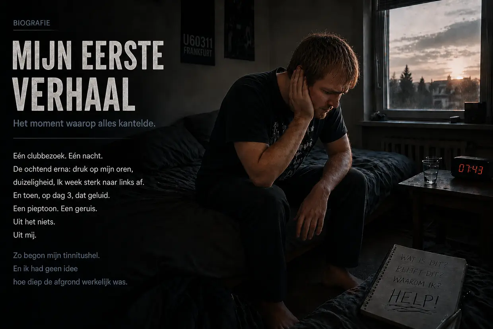
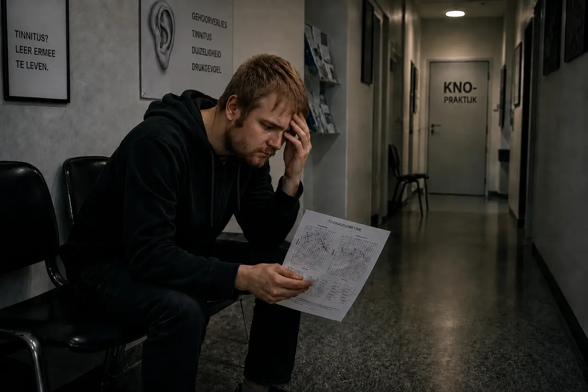
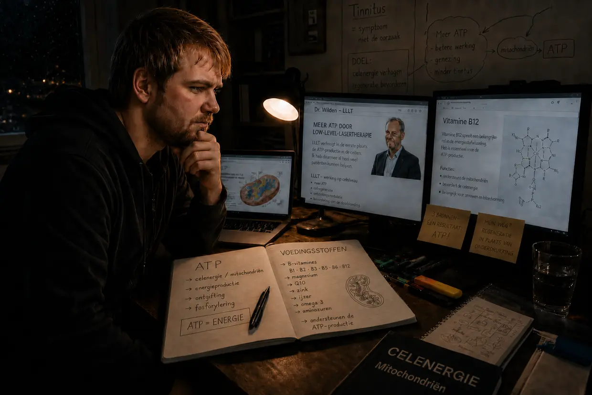

Mijn weg naar de tinnitushel – deel 1: de helletocht
Hallo, ik ben Dustin Müller. Omdat ik zelf tinnitus heb gehad – en meer dan eens – voelde ik een enorme behoefte om deze site op te zetten. Met mijn jarenlange speurwerk, echte biohackingprotocollen en mijn eigen ervaringen wil ik andere mensen met tinnitus laten zien hoe ik persoonlijk volledig van tinnitus ben genezen. Maar voordat we diep in de mechanismen duiken, moet ik vertellen hoe het bij mij eigenlijk allemaal begon. En dat was geen medisch toeval, maar een frontale crash.
Zoek je de korte versie? Deze lange versie gaat tot in de kleinste details – de audiogrammen, de bezoeken aan de KNO-arts, elke afzonderlijke doorbraak. Wil je het compacter, dan is de korte versie de juiste plek.
Najaar 2011: het onoverwinnelijke lichaam en de voorbelasting
Je bent 23, je hebt energie voor tien en je denkt dat je lichaam alles wel kan hebben. Met die mindset ging ik ook met mijn oren om. Ik hield van muziek. Jarenlang zette ik mijn koptelefoon zo hard dat mijn ouders het door de dichte kamerdeur konden horen. Mijn systeem was allang murw, zonder dat ik het wist.
Het begon allemaal met mijn neef. Omdat ik nog nooit echt in een disco was geweest, vond hij dat ik mee moest naar de U60311 in Frankfurt. Ik had er een onbehaaglijk gevoel bij, maar stemde toch toe. Al op de trap naar beneden voelde ik hoe bruut die bas fysiek was. Eenmaal binnen zocht ik naïef de plek op die mij de beste leek – ongeveer 10 meter pal voor de massieve boxen, met mijn linkeroor precies naar de geluidsbron. Dat was de fout die de eerste dominosteen omduwde.
De ochtend erna: de bedrieglijke vrede
Zodra de deur achter ons dichtviel, voelde ik die waanzinnige druk op mijn oren – links veel sterker. Alles klonk dof, als onder water. Mijn neef vond dat normaal, dat ging wel weer weg. Omdat ik dronken was, viel ik in bed. De volgende ochtend klapte ik bij mijn poging om op te staan direct terug in mijn kussen – mijn evenwichtssysteem lag aan gruzelementen en ik week heftig naar links af, alsof ik mechanisch werd weggetrokken.
Omdat ik een extreem oervertrouwen had in het herstelvermogen van mijn lichaam, nam ik het bijna met humor op: de tijd regelt dat wel. En zo leek het ook: op dag 2 werd het afwijken naar links minder, het drukgevoel verdween bijna helemaal. Ik slaakte een zucht van verlichting – ik dacht dat ik ermee weggekomen was.
Dag 3: het monster wordt wakker
Dag 3 na de disco. Ik werd wakker en hoorde opeens een geluid als een piepende koelkast. Wat krijgen we nou? Ik hield mijn hoofd tegen de muur. Luisterde bij het stopcontact. Checkte de computer, de wekker. Niets. Toen legde ik mijn handen op mijn oren.
O shit. Het komt uit mij. Het zit in mijn hoofd.
Ik stond minutenlang in shock. Wat is dit? Blijft dit nu? In mijn linkeroor een gebrom, geruis, sirenes en een hard gepiep. In mijn rechteroor nam ik op dat moment al een zacht piepje waar. Ondanks de schok dacht ik: dat gaat wel weer weg.
De vergiftiging van de software (de termijn van 14 dagen)
Op internet stuitte ik binnen een paar minuten op de antwoorden: acuut gehoorverlies en schade aan het binnenoor. Blijvend gehoorverlies, vaak oorsuizen. En toen die zin waarvan het bloed in mijn aderen stokte: “Het moet binnen 14 dagen behandeld worden – anders wordt het chronisch en houd je het je leven lang.” Op het forum tinnitus.de las ik berichten van mensen die al 5 jaar met dat ding leefden. Vijf jaar? Godverdomme. Een lichamelijk defect werd zo een enorme psychologische dreiging.
Het verraad in het wit (mijn eerste bezoek aan de KNO-arts)

Ik ging naar de KNO-arts van mijn kindertijd. Hoop. Straks komt de verlossing. Ik vertelde over de disco en de klachten. Hij, al lichtelijk geïrriteerd: “Ja, luister er niet naar. Zet wat muziek op om die tonen te overstemmen.” Ik vroeg door: “Maar het moet toch binnen 14 dagen behandeld worden? En is nog meer geluid echt verstandig?” Hij: “We beginnen met een audiometrie.” Dat zei hij, waarna hij de kamer verliet. Mijn vertrouwen brokkelde af.
De horror van de stilte (de audiometrie)
Pas toen ik de geluidscabine binnenstapte, merkte ik hoe heftig mijn gehoorschade werkelijk was. In die volstrekte stilte viel elke natuurlijke maskering weg – de geluiden in mijn linkeroor waren ongelooflijk luid. De test bestond uit drie delen: de frequentie en het volume van de tinnitus bepalen, het algemene gehoor meten, en de beengeleiding op de schedel.
Het vonnis
De arts legde me met de uitslag in zijn hand uit dat mijn gehoor blijvend beschadigd was en dat je daar niets aan kon doen. Geschokt vroeg ik naar mijn kansen. Weer een beetje geïrriteerd: “U moet leren ermee te leven. Er niet naar luisteren, afleiding zoeken, koptelefoon op.” Op mijn absurde vraag of ik nog naar disco’s mocht: “Ja, dat geeft geen problemen.” Daarmee nam hij afscheid.
De eed en de rit naar huis
De weg naar huis was een ware hel. Een loodzware last. In mijn wanhoop dacht ik even: of ik krijg dit weg, of ik wil niet meer leven. Maar thuisgekomen sloeg dat bodemloze verdriet ineens om in verzet. Ik kan niet geloven dat geen enkele arts in Duitsland weet wat tinnitus is. Ik kneep mijn handen tot vuisten:
“Of de tinnitus gaat, of ik ga. Ik laat niet toe dat dat ding mijn leven gaat bepalen. Ik moet zelf gaan kijken wat je eraan kunt doen.”
Het wilde westen van de oplossingen

Ik ging het zelf uitzoeken en stuitte op een overweldigende hoeveelheid “therapieën”:
- Cortison & ginkgo: middelen die de doorbloeding bevorderen en ontstekingen remmen – leek me logisch voor het herstel van mijn gehoor.
- Kaak en nek (CMD/cervicale wervelkolom, HWS): theorieën dat spierspanning die geluiden veroorzaakt. Maar omdat ik mijn tinnitus absoluut zeker door die discobas had opgelopen, sloeg mijn bullshitradar aan.
- TRT en maskeren: overstemmen met tonen. Ik kon de tinnitus daarmee inderdaad kortstondig zachter maken – maar zodra ik de maskerende geluiden uitzette, kwam de tinnitus agressiever en luider terug. (Nu weet ik: elk nieuw geluid dwingt die toch al lege haarcellen om te werken – ze verbruiken hun laatste ATP, dat ze eigenlijk voor herstel nodig hebben.)
- Supplementen: die mensen lachte ik toen uit. Wat een idioten, dacht ik – ze gaven ook nog geld uit aan iets wat ik volkomen nutteloos vond. Dat ik later juist via die weg – echte celenergie, ATP-productie, de juiste voedingsstoffen – mijn tinnitus zou kraken, had ik nooit durven dromen.
Het tweede bezoek aan de KNO-arts: het fatale advies
Op de ochtend van mijn tweede KNO-afspraak was de tinnitus plotseling enorm veel luider – ook het zwakke piepje dat al in mijn rechteroor aanwezig was, was nu duidelijk luider. (Nu weet ik: de verdere blootstelling aan geluid op advies van de arts – met muziek en ’s nachts met witte ruis – had mijn cellen opnieuw op de knieën gedwongen en het bestaande piepje in mijn rechteroor versterkt.) De tweede KNO-arts was vriendelijk en bemoedigend. Hij schreef ginkgo voor en raadde me aan genoeg te slapen en te bewegen. Op mijn vraag over de koptelefoon antwoordde hij: “Dat is zelfs goed om je af te leiden.” (Vanuit mijn huidige kijk op de celbiologie was dat een volstrekt fataal advies.) Toen ik vroeg naar die termijn van drie maanden waarna tinnitus chronisch zou worden, kwam er alleen: “Dat zien we dan… je kunt ook leren hem te compenseren, dus volledig weg te filteren.” Daar was hij weer, die halve zin die elke echte genezing uitsloot.
Het bedrieglijke hamsterwiel
Zo gingen dagen en weken voorbij. Overdag werd ik door school afgeleid. ’s Avonds vluchtte ik in die bedrieglijke maskeerlus: muziek via mijn koptelefoon en continu watervalgeluiden op de achtergrond. Daarmee kon ik het op korte termijn draaglijk houden. Maar biologisch draaide ik rondjes: door dat geluidsdecor hield ik mijn uitgeputte oren in permanente stress. Mijn cellen verbruikten hun laatste ATP om dat kunstmatige geruis te verwerken, in plaats van het voor de fysieke reparatie te gebruiken. Puur overlevingsmodus.
De tweede crash: hyperacusis en de vertigo-salto
Op een ochtend voelde ik plotseling weer een enorm drukgevoel in mijn linkeroor. Ik probeerde het te negeren en reed naar school. Omdat ik nog steeds op het advies van de artsen vertrouwde, maakte ik onderweg een fatale fout: ik zette mijn lievelingsnummer heel hard op de autoradio. Als ik had geweten wat me die schooldag nog te wachten stond, was ik meteen omgekeerd. De waarschuwingssignalen waren er al. Maar dat deed ik niet: de lessen kostten geld, dus reed ik door. (Die harde muziek was voor mijn volledig uitgeputte cellen de druppel die de emmer deed overlopen.)
In het eerste lesuur raakte mijn gehoor plotseling sterk vervormd en werd ik pijnlijk overgevoelig voor normale geluiden – hyperacusis. (Nu weet ik: de “schokdempers” van mijn oor, de buitenste haarcellen, hadden hun laatste ATP verbruikt.) In de uren daarna werd de druk in mijn linkeroor steeds heviger. Toen gebeurde het: mijn hele gezichtsveld begon verticaal te draaien – als een halve salto in mijn hoofd. De wereld stond op zijn kop. Na een paar seconden werd mijn zicht weer normaal. Wat overbleef: heftige schommelduizeligheid, sterk naar links afwijken en links dof horen. (De ionenstuwing in mijn binnenoor was zo gigantisch geworden dat die het aangrenzende evenwichtsorgaan als het ware had overspoeld.)
In volle paniek probeerde ik het uit te houden. Zodra de pauze begon, nam ik de benen. De rit naar huis was onverantwoord – door die extreme duizeligheid moest ik om de paar seconden tegensturen. Maar ik wilde alleen maar in veiligheid komen. Die tweede instorting was het ultieme keerpunt: Ik kan dit niet langer uitzitten.
KNO 3 en 4: pillen in plaats van antwoorden, de fantoomleugen en het psycholabel
Ik regelde diezelfde dag nog een spoedafspraak bij de derde KNO-arts. Audiometrie, een reuktest, een test op “positieduizeligheid” die niets veranderde. (Voor mij is het nu duidelijk: geen losse kristallen, maar endolymfatische hydrops – heen en weer bewegen met je hoofd helpt daar niet tegen.) Een vrouwelijke collega schoof er nog een diagnose achteraan: “Opnieuw acuut gehoorverlies, over 14 dagen weg.” Of misschien kwam het door verstopte bijholten – puur giswerk op basis van de klachten. Toen kwam de mokerslag: “Weet u, veel mensen raken depressief. Als de klachten blijven, schrijf ik u graag antidepressiva voor.” Ik zat daar en dacht dat ik het niet goed hoorde. Mijn evenwichtssysteem was ingestort, en de oplossing van die arts was… psychofarmaca? Ik zwoer het mezelf: nooit.
Bij de vierde KNO-arts – de “specialist” – legde ik mijn hele verhaal op tafel. In plaats van in te gaan op wat er op celniveau gebeurde, vroeg hij kil: “Hebt u weleens van cognitieve gedragstherapie gehoord? Uw probleem is dat u zich te sterk op uw gehoorklachten richt en daarmee de tinnitus in stand houdt.” Ik wierp tegen: “Maar dat geluid is toch fysiek ontstaan door die avond in de disco!” Hij reageerde er totaal niet op. Op mijn vraag over cortison antwoordde hij: “Dat zou alleen in de eerste 14 dagen zin hebben. In uw geval moeten we uitgaan van een fantoomgeluid.” Tot slot raadde hij me weer TRT met tegengeluid aan – en wimpelde mijn bezwaar af toen ik uitlegde dat mijn tinnitus door maskeren alleen maar agressiever werd. Het systeem had zich overgegeven en mij de schuld toegeschoven.
Het absolute dieptepunt: isolatie en een systeem dat faalt
De nachtmerrie bereikte zijn hoogtepunt op mijn eigen verjaardagsfeest (anderhalve maand na het acute gehoorverlies). Hyperacusis en vervormd horen maakten me gek. Mijn eigen tinnitus was zo luid dat hij alles wat anderen zeiden volledig overstemde. Er kwam nog een bizar verschijnsel bij: letters klonken totaal anders dan eerst – een “S” klonk als een “F”, een “T” als een “D”. Ik hield die overprikkeling niet meer uit, brak mijn eigen verjaardag af en vluchtte naar huis. In de dagen erna werd de duizeligheid zo extreem dat ik af en toe dreigde om te vallen – een klachtenbeeld dat medisch overeenkomt met de ziekte van Ménière. Ik zat volkomen geïsoleerd en afgesloten. Verlaten door het leven en verlaten door de artsen, die me alleen maar hadden ingeprent dat het tussen mijn oren zat en dat ik antidepressiva nodig had.
De eerste sleutelervaring: het bewijs tegen de fantoomleugen
Uitgerekend laat in het weekend kreeg ik door een infectie een ontsteking van mijn gehoorgang. Noodgedwongen sleepte ik me daarom naar de spoedeisende hulp van het universitair ziekenhuis in Frankfurt. De KNO-arts pakte een piepklein zuigertje om mijn gehoorgangen een voor een uit te zuigen. En precies op dat moment beleefde ik de absolute sleutelervaring: terwijl het schelle lawaai in mijn linkeroor tekeer ging, voelde ik tegelijkertijd hoe de tinnitus daar agressief en explosief op reageerde. Daarna gebeurde in mijn rechteroor precies hetzelfde.
Dat was een perfecte A/B-test met mijn eigen lichaam. Mijn verstand blies de uitspraken van die “specialist” in één keer aan stukken: een psychologisch fantoomgeluid reageert niet gelijktijdig op een zuiver mechanische geluidsprikkel precies in de betreffende gehoorgang! Die reactie was voor mij het absolute bewijs: de foutieve bron zat nog steeds daar beneden in mijn oor. De cellen schreeuwden onder dat lawaai onmiddellijk om hulp.
Cortison via een infuus en het verbandgaaswonder
De KNO-arts vroeg terloops hoe lang geleden ik dat acute gehoorverlies had gehad. Twee maanden. Volgens hem was cortison het proberen waard, omdat ik nog binnen die magische termijn van drie maanden zat. Ik stemde meteen toe en bleef een nacht op de afdeling. In het ziekenhuisbed zocht ik verder en kwam ik op de eigen website van een tinnituspatiënt terecht. Wat ik daar las, was op celniveau logisch: nog meer lawaai maakt tinnitus drastisch erger. Ook stond er een link naar dr. Wilden en diens low-level-lasertherapie, die de ATP-productie in de cellen gericht aanjaagt. Het paste voor honderd procent bij mijn ervaring met dat zuigertje.
Na drie dagen mocht ik naar huis – met dik verbandgaas in beide oren vanwege de ontsteking van mijn gehoorgang. Al tijdens die dagen merkte ik het: de tinnitus was merkbaar zachter geworden! Eerst dacht ik dat het door de cortison kwam. Maar toen ik op de site van dr. Wilden las hoe wezenlijk belangrijk het is om actief de stilte op te zoeken, sloeg de bliksem in: mijn oren waren dagenlang door dat verbandgaas sterk afgeschermd geweest! Een gewone KNO-arts zou mijn oren nooit zo zwaar hebben verbonden. Ik had onvrijwillig het bewijs gekregen dat volledige rust wél iets doet.

De knal, de dynamiek en het protocol van de volledige stilte
Een paar dagen later volgde nog een belangrijk inzicht. Toen ik vlak bij mijn oor crème uit een flesje aanbracht, klonk er plotseling een harde knal. In een fractie van een seconde gierde mijn tinnitus omhoog – MAAR binnen zeer korte tijd zakte hij terug naar zijn “normale” niveau. Het werd me glashelder: mijn tinnitus was niet statisch, maar juist extreem dynamisch! Hij werd in realtime erger door lawaai en werd zachter zodra ik consequent de stilte opzocht.
Ik nam keiharde maatregelen. Vanaf dat moment bracht ik actief zo veel mogelijk tijd in volledige stilte door. Muziek, films en afspreken met vrienden veranderden van dagelijkse kost in zeldzame “beloningen” – en dan strikt zonder koptelefoon, heel zacht en heel kort.
Zes maanden stilte – en het vastlopen op 25 %
En INDERDAAD werd de tinnitus van maand tot maand zachter. Terugkijkend ongeveer een kwart minder volume na zo'n 8 maanden. Al kon ik die volledige stilte natuurlijk niet 100 % perfect volhouden – zelfs noodzakelijke autoritten (200 km heen en terug) brachten de tinnitus weer op dat harde niveau. Ik had dan zo'n hele week mijn oren “voor niets” gespaard.
Toen kwam iets frustrerends: bij ongeveer 20–25 % verbetering stond het herstel opeens stil. Ik voerde mijn isolement tot het uiterste op – ik meed gesprekken, droeg voortdurend oordoppen en had zelfs de tikkende wandklok uit mijn kamer verbannen. Maar er gebeurde niets meer. Nul.
Atlascorrectie, CMD en de cervicale wervelkolom (HWS) – een doodlopende weg
Toen kwam ik op het idee om me nog eens grondig in de kaak, de cervicale wervelkolom (HWS) en tinnitus te verdiepen. Ik stuitte op CMD (craniomandibulaire dysfunctie) en kreeg bij de tandarts een opbeetplaat. In een orthopedisch centrum werd een HWS-syndroom vastgesteld en kreeg ik krachttraining (Med X) voorgeschreven. Ik hield beide behandelingen met ijzeren discipline vol en bleef daarnaast de stilte opzoeken. Na twee maanden kwam de ontnuchtering: mijn CMD- en HWS-klachten werden beter – maar aan de tinnitus veranderde ABSOLUUT NIETS.
Laatste strohalm: atlascorrectie. Ik reed 200 km naar een Heilpraktiker, die mijn scheve atlas met speciale apparatuur en manuele technieken weer op zijn plaats zette. Ook dat leverde na weken niets op. Het enige neveneffect: de Heilpraktiker raadde me psylliumschillen (vlozaadschillen), een mengsel van mineraalaarde en probiotica aan tegen mijn chronische gastritis (maagslijmvliesontsteking). En inderdaad: mijn hardnekkige maagslijmvliesontsteking, die al bijna een jaar aanhield, verdween. Dat maakte indruk op me – de reguliere geneeskunde had gefaald, de Heilpraktiker had geleverd.
Vitamine B12 – de belangrijkste (toevallige) sleutelervaring
Mijn vader had in die tijd polyneuropathie. Zijn huisarts stelde een uitgesproken vitamine-B12-tekort vast en schreef injecties voor. Toen hij zichzelf op een avond pal voor mijn ogen een injectie gaf, zei hij kort daarna dat de pijn minder was en dat hij het weer warmer had. Kon zo’n klein rood ampulletje echt iets zó lichamelijks teweegbrengen?
Ik zocht het uit en las: B12 is DÉ zenuwvitamine. Vegetariërs (dat was ik sinds mijn vijftiende!) en mensen met chronische gastritis (die van mij was pas kort daarvoor verdwenen) lopen extra risico. Ik liet bij de huisarts bloed prikken: het tekort was bevestigd, helemaal onderaan de normschaal. Maar de arts weigerde me injecties: “Nog binnen de normale waarden.” Aangeslagen verliet ik de praktijk.
Toen mijn vader ’s avonds zijn volgende B12-injectie nodig had, vatte ik moed en liet ik me er ook een geven. Belangrijk: ik raad je uitdrukkelijk af om dit zonder begeleiding van een arts na te doen. Wauw – na een paar minuten voelde ik dat mijn doorbloeding verbeterde; ik kreeg het aangenaam warm en mijn hoofd voelde helderder. Ik ging ontspannen naar bed.
DE VOLGENDE OCHTEND: het absolute wonder. Enkele seconden na het ontwaken merkte ik het meteen – de tinnitus was enorm afgenomen! Van 25 % verbetering plotseling naar ruim 40 % verbetering. Ik lag daar verbijsterd en was de tranen nabij. In de loop van de dag werd hij wel weer erger – maar niet tot het oude niveau. En de volgende ochtend opnieuw: 40 %.
Op de site van dr. Wilden las ik dat zijn laser de ATP-productie in de cellen gericht aanjaagt. En B12 is onmisbaar voor precies die ATP-productie. HET KWARTJE VIEL! Misschien heb ik die dure laser helemaal niet nodig – ik kan het ATP-niveau ook met gerichte voedingsstoffen verhogen.
Galkoliek en het lecithinewonder (mijn toenmalige myelinemodel)
Terwijl ik wachtte op hooggedoseerde multivitaminen uit de VS, sloeg de volgende ramp toe: een galkoliek door galstenen. Op de spoedeisende hulp midden in de nacht had de arts alleen een operatie te bieden – de galblaas eruit. Ik weigerde en ging op eigen risico naar huis.
Weer speurwerk op internet: iemand vertelde dat hij zijn galstenen volledig had opgelost door maandenlang lecithinekorrels te nemen. Ik haalde ze de volgende dag al, nam 30 g, en voelde inderdaad hoe de druk rechtsboven in mijn buik afnam. Belangrijk: bij galstenen moet je absoluut een arts erbij halen – dit is mijn heel persoonlijke ervaring in een acute situatie, geen behandeladvies voor anderen.
Maar het echte hoogtepunt kwam drie dagen later: na een B12-injectie plus lecithinekorrels gebeurde er opnieuw een wonder. De dag erna: 60–65 % verbetering ten opzichte van het uitgangsniveau! Na maanden van stilstand. Ik zocht verder en bouwde destijds het volgende model op: lecithine is een belangrijke bouwstof voor de myelineschede (de isolatielaag rond zenuwen). Volgens onderzoek zou juist die isolatie bij lawaaigerelateerde tinnitus beschadigd raken, zoals wanneer de plastic isolatie rond een dunne stroomkabel kapot is. En B12 zou DÉ belangrijkste vitamine zijn voor het herstel van de myelineschede. Nou zeg – dus ik heb niet alleen ATP nodig, maar ook BOUWSTOFFEN! Tegenwoordig kijk ik opener naar dit mechanisme: betrokkenheid van de gehoorzenuw of myeline acht ik nog steeds mogelijk, maar in mijn eigen geval kan ik die niet met zekerheid aantonen. Ook een indirecte route is mogelijk: choline uit lecithine zou als bouwstof voor acetylcholine kunnen dienen en zo de parasympathicus, diepe slaap en regeneratie kunnen ondersteunen – of misschien versnelde lecithine het celherstel via meerdere routes tegelijk. Misschien kwam het allebei samen.
De doorbraak naar 80 procent (de bypass via het B-complex)
Met lecithine, een multivitaminepreparaat en B12-injecties ging mijn herstel verder – maar de tinnitus bleef steken op ongeveer 70 % verbetering. Mijn vermoeden: de andere B-vitamines werden niet genoeg opgenomen. Ik haalde B1 en B2 als ampullen, B3, B5 en B8 als hooggedoseerde tabletten. En YES YES YES: van week tot week nam de tinnitus verder af! In de zestiende tot zeventiende maand na die avond in de disco was er daadwerkelijk nog maar 20 % van de tinnitus over (dus 80 % verbetering). Maar toen opnieuw: stilstand.
De definitieve genezing: het “carpet bombing” van de cellen
Ik zocht als een bezetene verder en kwam destijds tot de conclusie dat ik met alleen B12 en lecithine veel te beperkt dacht. Voor het door mij vermoede herstel van myeline en voor andere cellulaire opbouwprocessen dacht ik dat het lichaam een hele reeks andere voedingsstoffen nodig had – omega-3 (DHA/EPA), aminozuren, vitamine C, de vetoplosbare vitamines A/D/E/K en mineralen. Ik heb mezelf er werkelijk mee volgegooid: twee keer per week B-vitamine-injecties, drie tot vier keer per week 30 g lecithine, dagelijks aminozuurpoeder, 3 g omega-3, hooggedoseerde vitamine C, het mineralenmengsel van Life Extension, magnesium en zink van NOW Foods, dagelijks een glas LaVita, plus multivitaminetabletten van Dr. Rath. Orthomoleculair “carpet bombing”.
De fade-out en het einde van de nachtmerrie (100 % genezing)
Met mijn complete voedingsstoffenstack veranderde de dynamiek definitief. Volgens mijn model van destijds had mijn lichaam nu ATP-energie ÉN het volledige palet aan bouwstoffen. In combinatie met de monnikenmodus kon het eindelijk echt aan het werk. Tegenwoordig zie ik een betere energievoorziening als de primaire hefboom; de voedingsstoffen leverden tegelijk belangrijke cofactoren en bouwstoffen en kunnen het proces bovendien hebben versneld. Net als in het begin was de accu van mijn cellen ’s ochtends door de slaap volledig opgeladen – topconditie. ’s Avonds werd de tinnitus door de vermoeidheid van de dag weer luider. Maar de stilte vrat zich steeds verder de dag in: eerst was de toon tot de middag verdwenen, daarna tot de namiddag. De terugvallen ’s avonds werden steeds zwakker en korter.
En toen kwam die ene, laatste ochtend – ik zal hem nooit vergeten. Al in een fractie van een seconde, toen ik wakker werd, voelde ik het: het voelt anders in mijn hoofd. Met een bonkend hart – zo opgewonden als een kind met Kerstmis – duwde ik mijn oordoppen diep in mijn oren. Ik luisterde… en er was absoluut NIETS.
De dimmer stond definitief op nul. ’s Ochtends, ’s middags, ’s avonds – niets meer. Alleen die natuurlijke, vredige stilte die ik bijna twee jaar niet meer gekend had. De tinnitus was weg. Volledig verdwenen.
Dat gevoel was niet te beschrijven. Een diep, warm gevoel van ultieme opluchting – en van absolute genoegdoening. Ik had gewonnen: ik had niet opgegeven, had gezegevierd over de artsen die zeiden dat ik ermee moest leren leven en had uiteindelijk zelfs die dure laser niet nodig gehad. Mijn lichaam had het zelf gerepareerd – het resultaat was echt: de tinnitus was volledig verdwenen. Destijds verklaarde ik het mechanisme voor mezelf zo: de myelineschede was hersteld, het actineskelet van de gehoorcellen stond weer overeind, het haperende elektrische contact was hersteld en mijn hersenen hadden de noodversterker (central gain) uitgeschakeld. Tegenwoordig zie ik de energievoorziening als de belangrijkste hefboom van de cellulaire regeneratie; daarbij kijk ik vooral naar de gehoorcellen, hun stereocilia en celmembranen. Betrokkenheid van myeline of de gehoorzenuw acht ik nog steeds mogelijk, maar in mijn eigen geval kan ik die niet met zekerheid aantonen. De biologie had gewonnen.
Wat ik die ochtend nog niet wist: vele maanden later zou mijn lichaam door een andere fatale kettingreactie wegzakken in een extreem zware vorm van CVS (chronisch vermoeidheidssyndroom). Maar die kennis – dat je zelfs het “ongeneeslijke” kunt genezen – nam ik mee naar de volgende hel.
Het verhaal is hier nog niet voorbij. Wat na die eerste triomf kwam, was de werkelijke vuurproef – en het doelbewuste, waanzinnige bewijs dat mijn biologische model echt werkt.